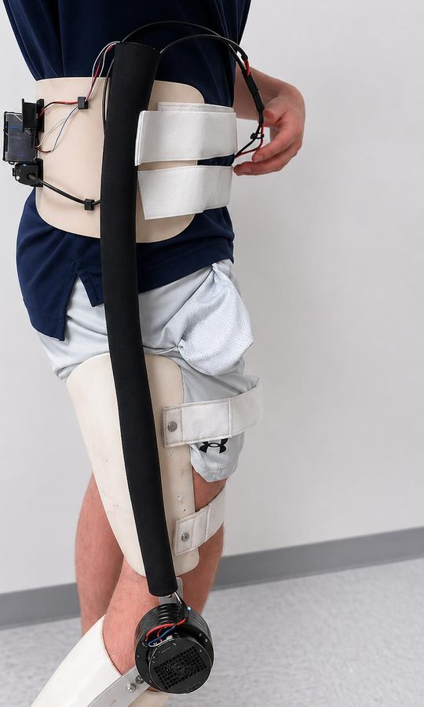
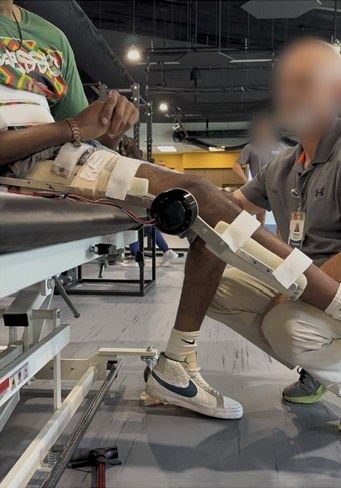

I build control software for robots, most recently a knee brace driven by the wearer’s own
muscle signals. Now at Duke, I’m working on continuum robots, hand-tracking teleoperation and
underwater robots.
Discipline
Robotics and biological engineering
Currently
Student researcher, Duke Robotics
Education
M.Eng., Duke, 2027 B.S., LSU, 2026
Based in
Durham, NC
Last revised
Oct 2026
About
I came to robotics through biological engineering. At Louisiana State University I earned a
B.S. in Biological Engineering with a minor in Robotics Engineering, graduating summa cum laude
in 2026. I’m now in Duke’s M.Eng. program in Robotics and Autonomy, where I do research on
autonomous underwater vehicles.
Most of my work sits between measurement and control: getting clean signals from people and
sensors, then using them to drive hardware safely. Before Duke I spent a year and a half in a
clinical biomechanics lab at Ochsner Health, and led the technical side of a powered knee
brace driven by the wearer’s own muscle signals.
Programming
Python with NumPy and PyTorch, MATLAB, C++, Git
Robotics
ROS 2, motor and actuator control, EMG acquisition and filtering, sensor integration
Design
Autodesk Fusion 360, 3D printing
Motion capture
Vicon Nexus, Qualisys, Visual3D
Current work
What I’m working on this fall. Everything here is still in progress, and I’ll add results as
they come in.
Autonomous underwater vehicle
What does an underwater robot need to navigate and collect a sample with no one at the controls?
I’m helping adapt a commercial Blue Robotics underwater vehicle for fully autonomous operation
and robotic manipulation, and evaluating it as a platform for Navy-partnered coral sampling.
Autonomous navigation and control come next.
Context
Research, Duke Robotics
Status
In progress
Collapsible SpiRobs
What shapes can a spiral robot reach if it can also change its length?
SpiRobs are tendon-driven robots built on a logarithmic spiral, the same curl found in octopus
arms. We’re adding a variable-length action and studying the geometries it opens up, with an
eye on sharp turns in endonasal and endoscopic tools and, possibly, manipulation for
underwater coral farming. I’m part of the design work, and I’m focused on control: getting
the tendons to work together rather than against each other.
Context
Continuum Robotics course, Duke
Status
In progress
Markerless hand tracking for robot teleoperation
Can two ordinary cameras track a hand well enough to steer a robot arm?
I’m building a two-camera system that tracks the joints of a bare hand, with no markers, and
estimates its position and orientation. That pose is mapped onto a collaborative robot arm
with a standard gripper, so the arm follows the operator’s hand. It builds on my clinical
motion-capture work, minus the markers.
Context
Course project, Duke
Status
In progress
Projects
2026
MFlex-65: a muscle-controlled powered knee brace
A hip-knee orthosis with a motorized knee that reads the wearer’s own muscle signals
and helps bend and straighten the leg. It’s designed for gait rehabilitation and muscle
strengthening in people with lower-limb weakness after a stroke or spinal cord injury.
Because the patient’s own muscle activity drives the motion, each session trains both the
muscle and the nerve pathway that controls it. It’s also a lower-cost alternative to
commercial powered orthoses. This was our senior design project, built by a team of six
with a clinical sponsor at Ochsner Health.

The control electronics ride on a waist belt to keep weight off the leg. The motor sits on the knee hinge.Demonstration of brace kinematics in response to user EMG signals.

Working with a patient in the clinic. Faces blurred for privacy.
“Patients need to see rewards. If they can control knee flexion using this device, it
can be wildly encouraging… The goal is to strengthen the muscle and strengthen the
neural pathway to the muscle.”
Dr. Eddie Austin, PT, OT, PhD, project sponsor
How the controller works
As the team’s technical lead, I designed the control architecture end to end. Most
EMG-driven orthoses map muscle signal straight to motor torque. Ours instead treats it as a
torque on a simulated lower leg, adds modeled gravity and damping, and integrates the result
into a speed command 200 times a second. Every command then passes through a three-layer
safety envelope that keeps the knee between 0 and 65°: it slows the joint near each limit,
stops the integrator from winding up, and caps speed outright. A watchdog zeroes the output
if feedback from the motor drops out. In bench testing, this made the limits much easier to
enforce than direct torque control.
The control loop. Muscle effort sets a torque, the dynamics model turns it into a speed
command, and the stages outlined in red keep the joint in a safe range.
Swipe sideways to see the whole diagram.
Role
Technical lead, control architecture
Team
Six students
Built with
Python, Raspberry Pi, CAN bus, MyoWare EMG, Arduino
A complete motion stack in Python for a low-cost, 3D-printed arm modeled on an industrial
welding robot. It covers forward kinematics from DH parameters, damped-least-squares inverse
kinematics with per-joint weighting and servo limits enforced on every iteration, and a GUI
where you enter waypoints and the arm follows a Cartesian path between them.
Course
Industrial Robotics, LSU
Built with
Python, 3D printing
2025
Automated gait reports from motion capture
Python tools that turn raw motion-capture output into standardized graphical reports for
clinicians. Processing time per patient dropped from about two hours to ten minutes, and
the errors that came with copying numbers by hand went away.
Where
Clinical biomechanics lab, Ochsner Health
Built with
Python
Experience
Research and work
Sep 2026 to now
Student researcher, Duke Robotics
Adapting a commercial underwater vehicle for autonomous navigation and robotic manipulation.
Evaluating it as a platform for Navy-partnered coral sampling.
Jan 2025 to Jun 2026
Clinical biomechanics research intern, Ochsner Health
Built Python tools that cut per-patient report processing from two hours to ten minutes.
Owned quality control of motion-capture data in Vicon Nexus and Visual3D, flagging trials affected by marker dropout or placement error.
Analyzed joint kinematics and gait metrics and presented findings to clinicians.
Collected data on Vicon and Qualisys systems, including calibration and marker placement.
Aug 2024 to Dec 2025
Undergraduate teaching assistant, Louisiana State University
Coached first-year engineering students through Autodesk Fusion 360, Excel and core engineering workflows.
Summer 2024
Design and project management intern, Syracuse Fitness
Produced dimensioned floor plans and 3D renderings for gyms, universities and homes.
Gave narrated design walkthroughs that supported about $150K in closed contracts.
Education
Expected Dec 2027
M.Eng. Robotics and Autonomy, Duke University
Coursework in continuum robotics, medical robotics and surgical technologies, and robotics.
2022 to 2026
B.S. Biological Engineering, minor in Robotics Engineering, Louisiana State University
Summa cum laude, GPA 4.03 out of 4.30.
Tau Beta Pi Engineering Honor Society.
Coursework in industrial robotics, quantitative biology and experimental methods.